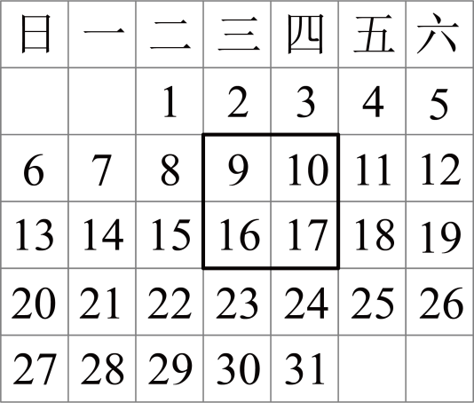

第五章 一元一次方程·培优卷
【北师大版2024】
时间：120分钟 满分：120分
姓名：___________班级：___________考号：___________
考卷信息：
本卷试题共24题，单选10题，填空6题，解答8题，满分120分，限时120分钟，本卷题型针对性较高，覆盖面广，选题有深度，可衡量学生掌握本章内容的具体情况！
第Ⅰ卷
一．选择题（共10小题，满分30分，每小题3分）
1．（3分）（24-25六年级上·上海·阶段练习）下列各方程中，属于一元一次方程的是（ ）
A．2x+x=1 B．3x+2y=9 C．z=0 D．x2+x−2=0
2．（3分）（24-25七年级上·安徽合肥·期末）下列方程的解是x=2的方程是（ ）
A．3x+6=0 B．12x=−1 C．52x−5=0 D．1−2x=5
3．（3分）（24-25七年级下·河南驻马店·阶段练习）若x=y，则下列等式不一定成立的是（ ）
A．x−1=y−1 B．ax=ay C．xa=ya D．x+3=y+3
4．（3分）（24-25六年级下·山东淄博·阶段练习）定义运算“*”为A∗B=AB+2A，若3∗x+x∗3=14，则x=（ ）
A．−1 B．1 C．3 D．−3
5．（3分）（24-25七年级上·江西鹰潭·阶段练习）四名同学用接力的方式解方程2x−13=1−3x+16，约定：每人只能看到前一人给的式子，并进行一步计算，再将结果传递给下一人，最后求出方程的解．过程如图所示：

接力中，自己负责的一步出现错误的是（ ）
A．只有乙 B．甲和丁 C．乙和丁 D．乙和丙
6．（3分）《孙子算经》中有这样一道题，原文如下：“今有百鹿入城，家取一鹿不尽，又三家共一鹿适尽，问城中家几何？”大意为：今有100头鹿进城，每家取一头鹿，没有取完，剩下的鹿每3家共取一头，恰好取完，问城中有多少户人家？请解答上述问题：若设城中有x户人家，则下列方程正确的是（ ）
A．x+x3=100 B．x+3x=100 C．x−x3=100 D．x−3x=100
7．（3分）（24-25七年级下·四川宜宾·期末）若关于x的一元一次方程−2m−3x=1和方程5x−4=2x−10的解互为倒数，则m的值为（ ）
A．14 B．12 C．−12 D．−14
8．（3分）（24-25七年级上·河北唐山·阶段练习）小明在做家庭作业时发现练习册上的一道解方程的题目中的一个数被墨水污染了：x+12−5x−■3=−12，“■”表示被污染的数，正确答案是x=2，那么被污染的数是（ ）
A．6 B．5 C．4 D．3
9．（3分）（24-25七年级上·广东韶关·阶段练习）幻方是古老的数学问题，我国古代的《洛书》中记载了最早的幻方—九宫图．将数字1~9分别填入如图所示的幻方中，要求每一横行、每一竖列以及两条斜对角线上的数字之和都是15，则n的值为（ ）
6 | 7 | |
5 | n | |
4 |
A．1 B．2 C．8 D．9
10．（3分）（24-25七年级下·河南南阳·阶段练习）小明一家三口准备外出旅游，有甲、乙两家旅行社可供选择，为了竞争，甲旅行社说：“父亲买全票，其他人可享受6折优惠”．乙旅行社说：“家庭旅行可按团体票计价，按原价的45优惠”．这两家旅行社每人的原票价相同，小明发现在甲旅行社买票可比乙旅行社优惠20元．由此可知每人的原票价为（ ）
A．100元 B．120元 C．150元 D．200元
二．填空题（共6小题，满分18分，每小题3分）
11．（3分）（24-25七年级上·四川广安·阶段练习）根据“x的3倍与5的和比x少3”可列方程 ．
12．（3分）（24-25七年级上·浙江宁波·期末）若x=−2是关于x的一元一次方程ax+b=3的解，则4a−2b+4的值是 ．
13．（3分）（24-25六年级上·上海·阶段练习）已知关于x的方程a2x−1=3x−2无解，则a的值为 ．
14．（3分）设P=2y−2，Q=2y+2，且3P−Q=0，则y的值是 ．
15．（3分）（24-25七年级上·江苏南通·阶段练习）已知关于x的一元一次方程12024x+1+34=2x+1+b的解为x=2，那么关于y的一元一次方程12024y−3+34=2y−3+b的解y= ．
16．（3分）帅帅今年12岁，帅帅问数学老师的年龄，数学老师回答说：“等你到我这么大时，我的年龄是你现在年龄的4倍”，那么数学老师现在的年龄是 岁．
第Ⅱ卷
三．解答题（共8小题，满分72分）
17．（6分）解方程：
(1)4−x=2−32−x；
(2)2x−13=1−2x−16
18．（6分）（24-25七年级下·山西晋城·阶段练习）解方程：2x+35−x−12=1．
解：去分母，得22x+3−5x−1=1，……第一步
去括号，得4x+6−5x+5=1，……第二步
_____，得4x−5x=1−6−5，……第三步
合并同类项，得−x=−10，……第四步
方程两边都除以−1，得x=10．……第五步
(1)横线处的步骤为_____，这一步的依据是_____．
(2)该同学的解答过程从第_____步开始出现错误，错误的原因是_____，
(3)请直接写出该方程正确的解．
19．（8分）（24-25七年级上·江苏常州·阶段练习）定义：如果两个一元一次方程的解互为相反数，我们就称这两个方程为“对称方程”．
(1)若关于x的方程2x−m=1与方程2x−4=x+3是“对称方程”，求m的值．
(2)若关于y的方程2y+3m=0与方程2m−3y+5=0是“对称方程”，求m的值．
20．（8分）（2025·甘肃张掖·一模）嘉淇在解关于x的一元一次方程3x−12+◯=3时，发现正整数“◯”被污染了．
(1)【任务1】若这道题的答案是x=−1，求“◯”代表的正整数；
(2)【任务2】嘉淇问同学小明，小明也记不清“◯”的具体值了，只记得这个方程的解是正整数， 嘉淇经过深入思考，将“◯”设为m，通过计算，很快得到了“◯”的值，你知道她是怎么计算的吗？请你求出“◯”的值．
21．（10分）（24-25七年级上·重庆忠县·期末）设a为有理数，已知关于x的一元一次方程3x−a+1=x+2a．
(1)若方程2x+43−5x−26=1与已知方程的解相同，求a的值；
(2)若关于x的方程2x−3a=1+x2的解比已知方程的解大53，求已知方程的解．
22．（10分）服装厂要生产一批某型号套装，已知每5米长的布料可做上衣2件或裤子5条，一件上衣和一条裤子为一套，计划用560米长的这种布料生产套装．
(1)请问用多少米的布料做上衣，用多少米的布料做裤子？
(2)某商场以每套150元的价格购进了这批服装，定价为每套200元，但在运输的过程中，由于司机的疏忽丢失了一包服装，共计10套，商场想尽快卖完这批服装，计划打折出售，全部售出后利润率是15%，求商场计划打几折出售？
23．（12分）（24-25七年级上·重庆永川·阶段练习）如图是某年3月的日历，用一长方形框在表中任意框住4个数．

(1)用长方形框框出的四个数中左上角的数为18，右下角的数为______，这四个数之和为_______．
(2)若记左上角的数为x，则另三个数用含x的代数式表示出来，从小到大依次是_______，_______，_______．
(3)能否用长方形框框出这样的4个数，它们的和等于92？若能，则求出x的值，若不能，说明理由．
24．（12分）（24-25七年级下·重庆万州·阶段练习）一个水池有两个管可注水，若单开甲管，36小时注满；若单开乙管，24小时注满．
(1)由甲管先开若干小时，再由乙管接替甲管工作，甲、乙两管共用32小时注满水池，问乙管开了几小时？
(2)若在水池下面安装一个排水管丙，单独开丙管18小时可以将一水池的水放完，现三管齐开，几小时可将一空池注满？